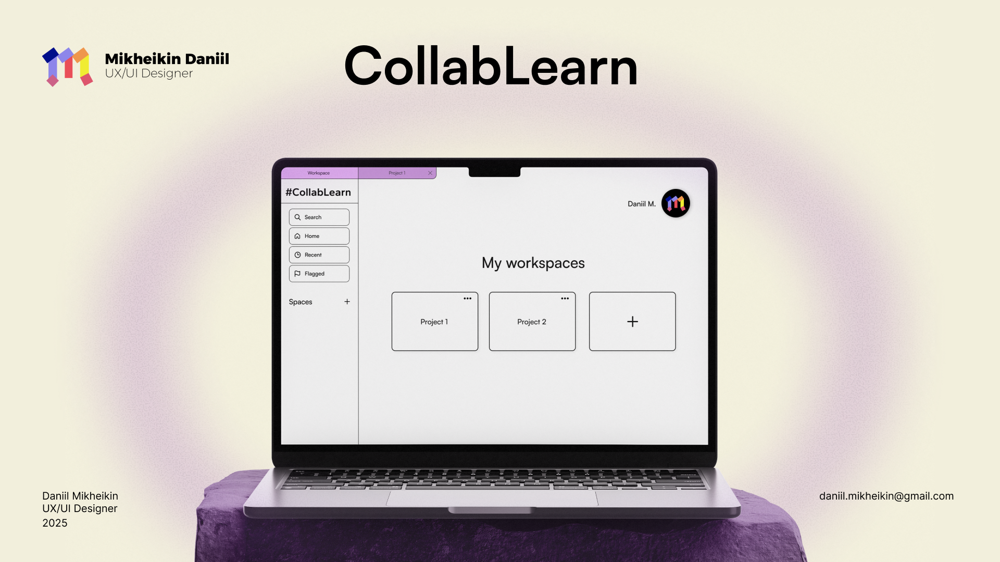
Project Idea
In today's online learning landscape, students and professors increasingly collaborate on group and solo projects digitally. However, fragmented tools and constant app-switching lead to fatigue, divided attention, and reduced productivity.
To address this, I designed a user-centered prototype for an all-in-one web platform that streamlines collaborative studies and research. Targeting pain points like inefficient knowledge exchange and workflow disruptions, I conducted user research (including interviews) and applied iterative design principles to create intuitive features such as real-time sharing, chat, annotation tools, and personalized workspace.
A prototype created in Figma improves efficiency and focus through seamless interaction.
01 Context
University students often struggle with fragmented tools and constant app-switching during group and individual projects, leading to inefficiency and frustration.
CollabLearn was created to solve this by providing a single, user-friendly all-in-one collaboration workspace.
02 Challenge
The main challenge was to create a new all-in-one collaboration platform that felt familiar and intuitive to students, while introducing new tools and smarter workflows that would reduce app-switching and significantly improve productivity.
03 Solution
The key to solving this problem was identifying, through surveys, the new tools students needed to work effectively on group projects: an integrated chat feature, flexible data storage, and a task-assignment system.
04 Impact
CollabLearn significantly reduces fatigue caused by switching between multiple apps and increased productivity through effective built-in chat, AI-powered file sorting, and adaptive workspace modes.
Research
I conducted empirical user research focusing on students facing fragmented online tools. This included 5 semi-structured interviews with target users (e.g., university students in group projects), exploring pain points like app-switching fatigue and inefficient workflows.
Interview excerpt
"If you could magically fix one part of the group-work or research process, what would it be?"
"I think a good solution would be a platform where I could organize the entire process from start to finish."
All in-one solution
These insights highlighted the need for a structured tool with integrated features like real-time collaboration, role assignment.
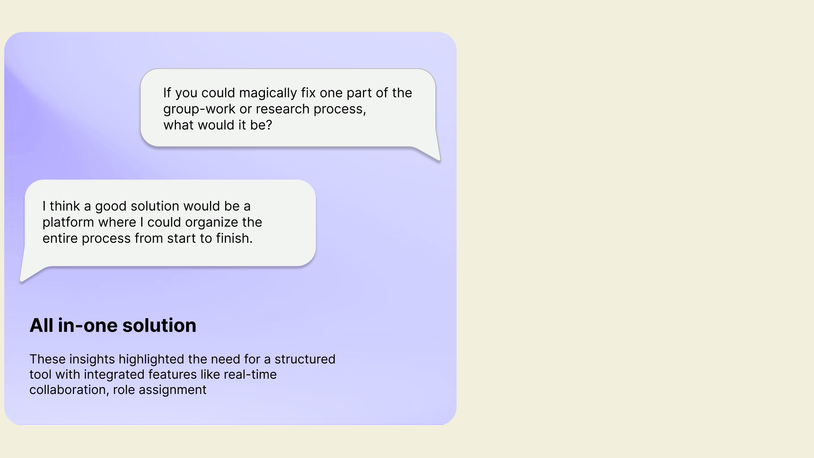
Key findings confirmed significant challenges:
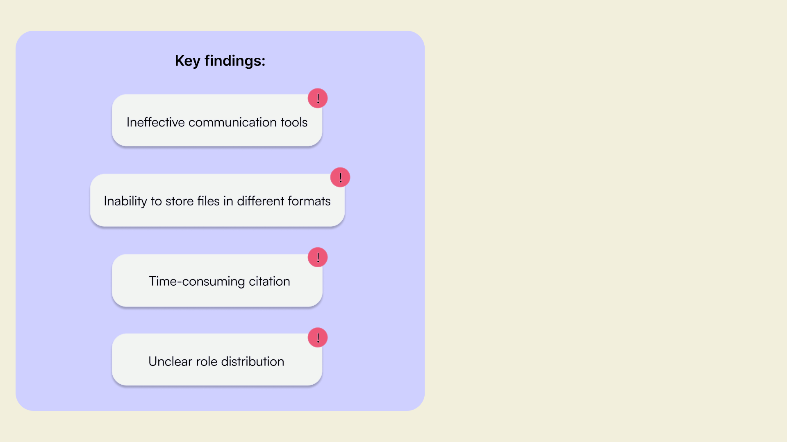
Secondary Research
In addition, a secondary study was conducted to confirm the information obtained from potential users, based on the article "The Role of Digital Tools in Enhancing Collaborative Learning in Secondary Education". It highlights how user-friendly interfaces in applications such as Google Classroom and Microsoft Teams optimize collaboration.
- Real-Time Communication and Task Management: Features for instant messaging, file sharing, and co-editing (shared documents) reduce coordination barriers, enabling efficient task assignment and progress tracking without physical meetings.
- Positive Impacts on Engagement: Good design correlates with a 30% engagement boost and 75% motivation increase, as students report easier peer interaction and critical thinking in online environments compared to face-to-face, reducing frustration from unequal contributions.
Takeaway: Good design can increase motivation, and real-time chat features lower barriers to coordination. Digital tools transform secondary collaborative learning by bridging gaps in traditional group dynamics: 68% of students show improvement in critical thinking, and 82% show improvement in peer interaction. Interface design plays a key role — user-friendly elements increase workflow efficiency, turning potential demotivators (such as ambiguous open-ended tasks) into opportunities for creative problem solving.
Problem solving: Personalized dashboards for each participant (used as different screens for documentation).
Interviews & Surveys
Tell me about the last time you were frustrated during a group project. What happened?
- "It was when I wasn't able to share a file with my teammate."
- "Usually I get frustrated when the outcome of my teammates is not as good as I expected it to be. But I already made peace with that; I either communicate it or, since my team projects take place in the academic context, understand that things don't need to be perfect to be good... If the situation is really bad I like when it's possible to state what each member did."
- "The use of excessive AI from my project partner."
- "I'm not familiar with the software, so I feel very anxious."
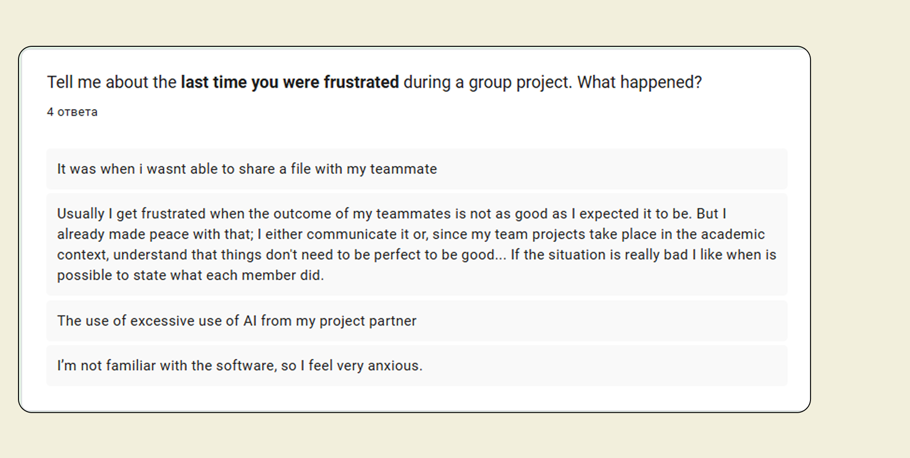
In group work, where do the biggest problems usually happen? (4 responses)
- Communication — 0 (0%)
- Task coordination — 1 (25%)
- Sharing files — 1 (25%)
- Finding/organizing research — 0 (0%)
- Keeping everyone updated — 1 (25%)
- The effort people put into the work — 1 (25%)
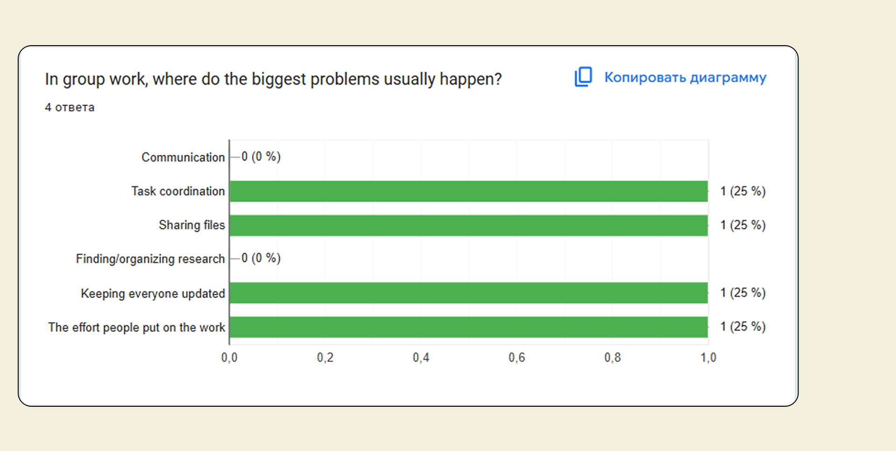
Survey notes (raw): Tools mentioned by participants included Canva, Miro, Google Forms, WhatsApp, Google/ChatGPT, and Word — used for file collecting, video calls, and document collaboration. Respondents also flagged a need for better face-to-face communication experience.
Storyboard
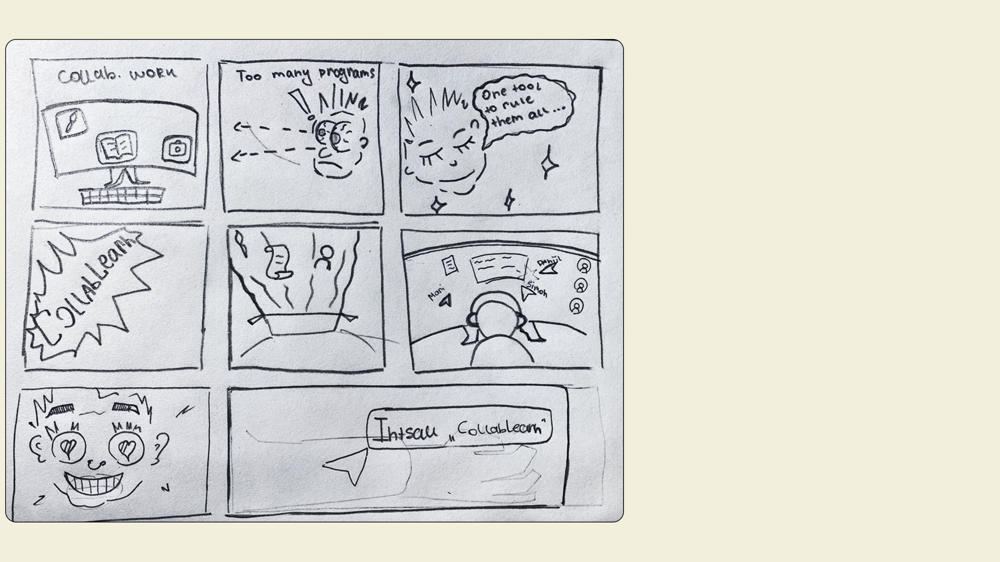
User Personas
Three Media & Communication Design students, three shared frustrations.
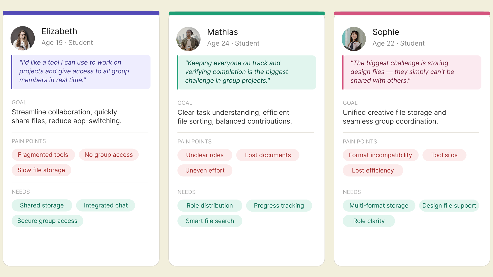
Wireframing
WorkSpace Wireframe — Iteration 1
This early wireframe focused on establishing the overall layout of the main workspace. The main goal was to explore and test the optimal placement of key elements such as the search bar and sidebar navigation, ensuring a logical and intuitive structure from the very beginning.
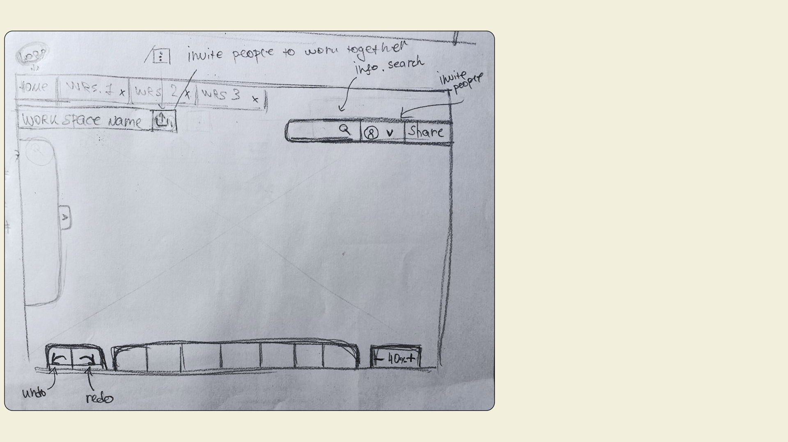
WorkSpace Wireframe — Iteration 2
In the second wireframe iteration, I focused on refining the workspace layout, with special attention to the Project Title Bar. This step helped establish a clearer visual hierarchy and more intuitive access to project settings and controls.
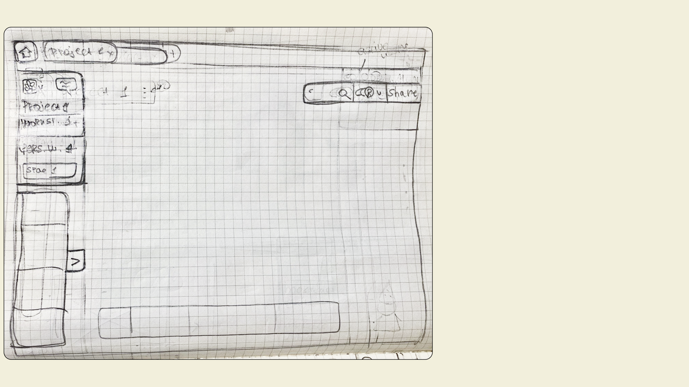
Finalized Workspace Layout
This final wireframe served as the foundation for the high-fidelity prototype. Key improvements included repositioning the search bar for better visibility, adding a dedicated task assignment button, implementing active user icons, and introducing a prominent "Share" button.
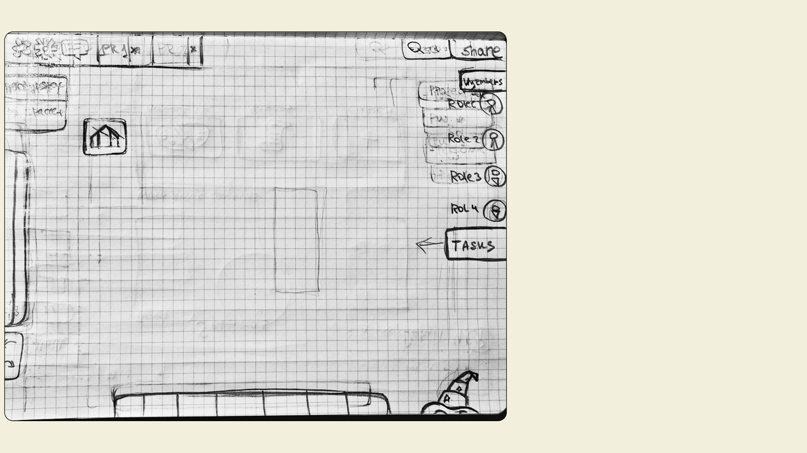
AI Assistant
An AI assistant (represented by the wizard's hat icon in the lower-right corner) was initially planned to support users. However, user interviews revealed low trust in AI within collaborative environments, so it was removed from the final design.
Micro-interactions Map
Micro-interaction maps with user flow descriptions for key pain points.
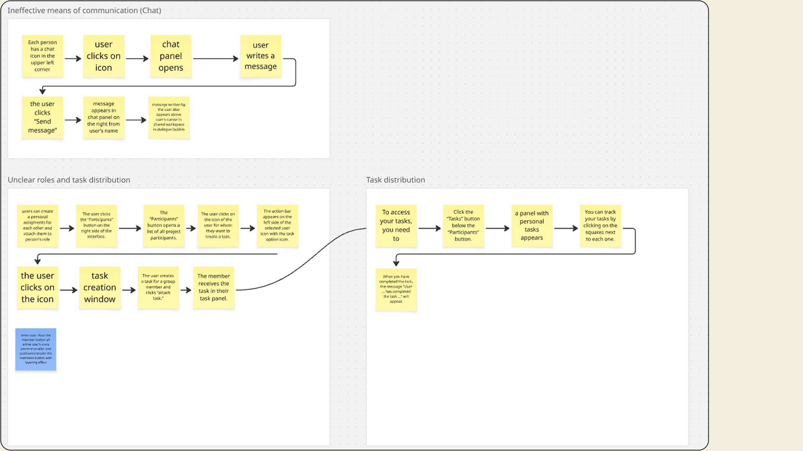
Ineffective means of communication (Chat)
- Each person has a chat icon in the upper left corner.
- User clicks on icon.
- Chat panel opens.
- User writes a message.
- The user clicks "Send message."
- Message appears in the chat panel on the right, under the user's name.
- The message written by the user also appears above the user's cursor in the shared workspace, in a dialogue bubble.
Unclear roles and task distribution
- Users can create personal assignments for each other and attach them to a person's role.
- The user clicks the "Participants" button on the right side of the interface.
- The "Participants" button opens a list of all project participants.
- The user clicks on the icon of the user for whom they want to create a task.
- An action bar appears on the left side of the selected user's icon with the task option icon.
- The user clicks on the icon, opening the task creation window.
- The user creates a task for a group member and clicks "attach task."
- The member receives the task in their task panel.
Task distribution
- To access your tasks, click the "Tasks" button below the "Participants" button.
- A panel with personal tasks appears.
- You can track your tasks by clicking on the squares next to each one.
- When you complete a task, the message "User ... has completed the task ..." appears.
Toolbars Across Modes
Toolbars for Classic, Creative, Writer modes
User interviews revealed the specific tools students need for different types of work. I organized these tools into three categories — Classic, Creative, and Writing — and created three corresponding workspace modes, each equipped with the most relevant tools for its purpose.
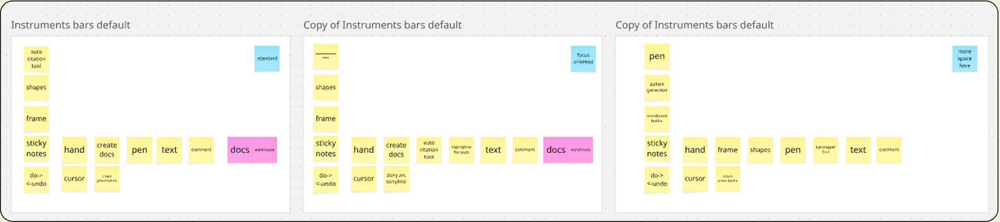
UI Design
The UI adopts a calm, minimalist aesthetic that helps users stay focused on their tasks without visual distractions. Inspired by the feeling of a cozy workspace combined with structured creativity, it creates a motivating environment that encourages knowledge acquisition and productive collaboration.
Color palette: Primary and Secondary color sets were defined to support the calm, focused visual identity.
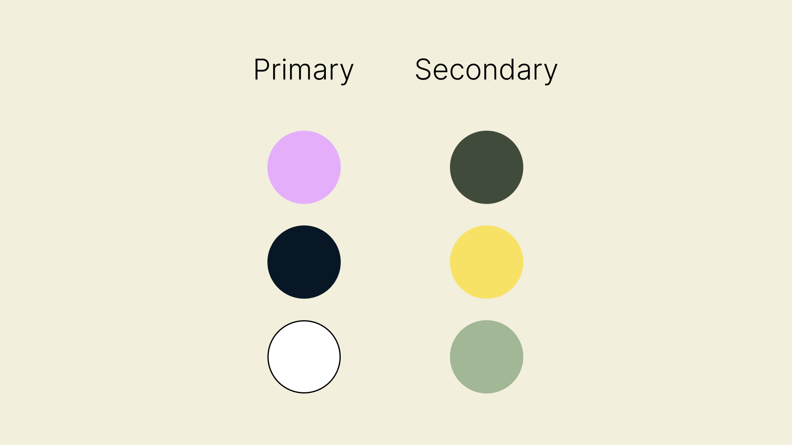
The Main Dashboard
The main dashboard features a clean, distraction-free navigation that gives users of all experience levels instant access to their projects and tools.
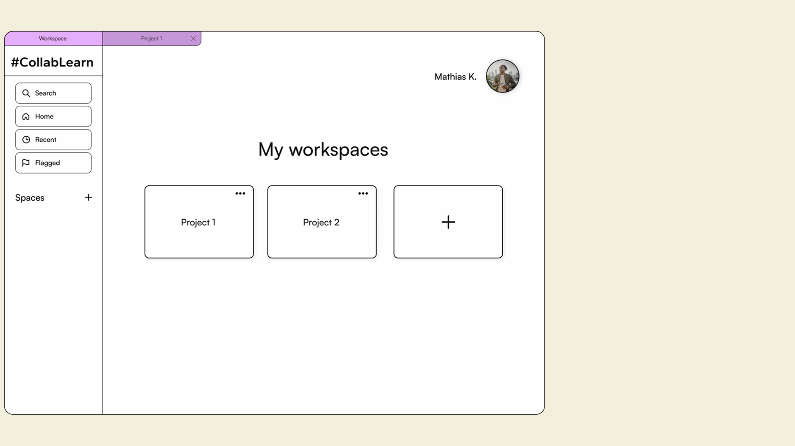
Classic Workspace Mode
In Classic Mode, the main workspace offers a clean, well-organized set of essential tools that cover the needs of most projects. For more specialized requirements — such as advanced creative tools or writing features — users can easily switch to a dedicated performance mode.
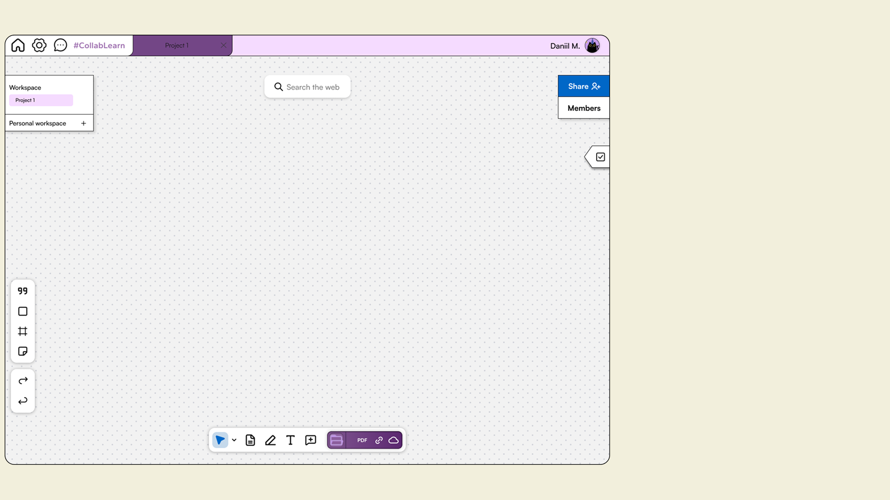
Citation, shapes, frame & note
The left toolbar provides a clean set of essential tools for everyday project work, including an auto-citation feature that simplifies academic paper writing and saves users valuable time.
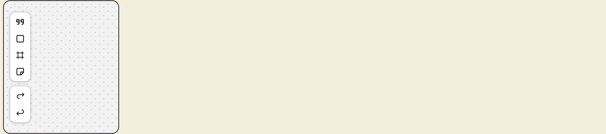
Move, docs, draw, text, comment & auto-sorting
The bottom toolbar gives quick access to additional tools, including an intelligent file browser that auto-sorts documents in any format by topic — making it easy to find and share files without switching apps.
Internet search
The Find Bar at the top of the UI gives users instant access to web search, allowing them to find information quickly without switching between apps.
Settings
In the Settings screen, users can easily update their personal information and switch between performance-oriented modes — from a classic universal layout to a creative workspace and writer tools — giving everyone the flexibility to work in the way that suits them best.
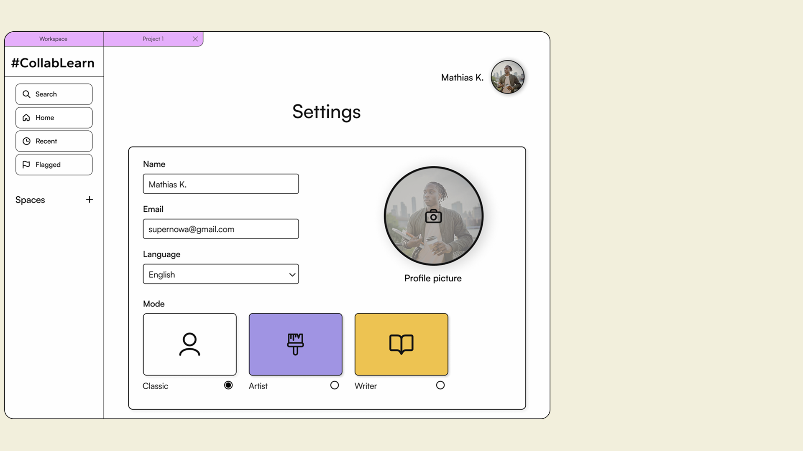
Writer Mode
In Writer Mode, the interface automatically darkens the background, spotlighting the document to create a calm, focused writing environment and reduce distractions.
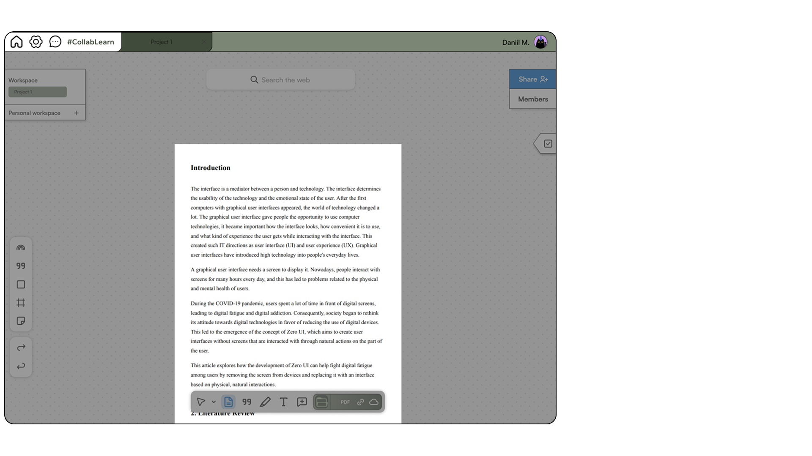
Roles & Tasks Assignment
Clicking a member's avatar opens the Roles & Tasks Assignment window, allowing users to define roles and assign personal tasks in one place — keeping everyone clear on responsibilities.
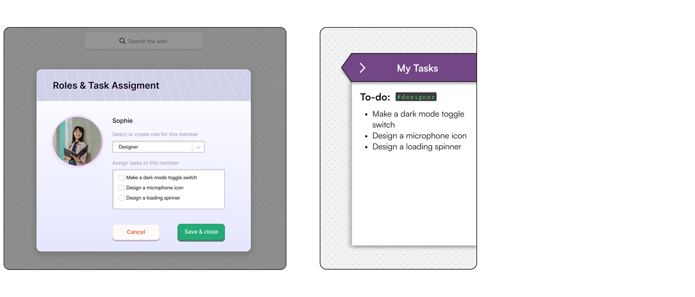
Button States
Three button states were designed for consistent interaction feedback:
Real-Time Chat & Smart File Sorting
Chat and Auto-Sorting are seamlessly integrated into the workspace: the chat keeps the team connected in real time, while the auto-sorting button with format icons instantly organizes uploaded files by topic and type.
Real-time Chat
The integrated chat solves the app-switching problem and significantly reduces user fatigue by keeping all communication inside the platform.
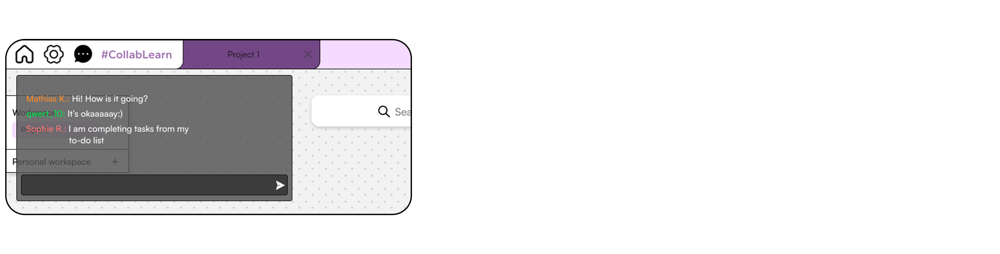
Automatic File Sorting
AI-powered auto-sorting organizes files by format and topic, giving users instant access at any time without having to search.
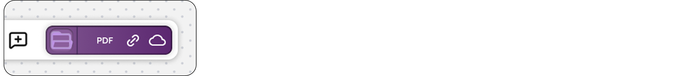
Key findings of the project
This project taught me how a single, adaptive workspace can solve real academic pain points — from constant app-switching to unclear roles and file chaos. By combining real-time chat, AI-powered auto-sorting, and flexible modes, the platform creates a calm, focused environment that adapts to different user needs.
The biggest lesson was that thoughtful research and user personas lead to genuinely useful features and the resolution of real-world problems.